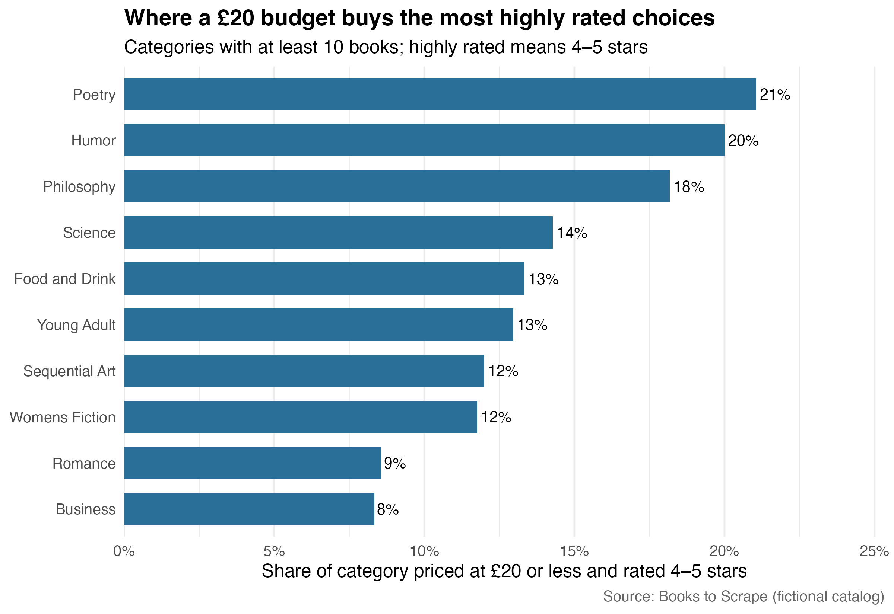

What Should a Budget-Conscious Reader Browse First?
Using rvest to turn a fictional bookstore catalog into an actionable recommendation
library(dplyr)
library(readr)
library(ggplot2)
library(scales)
library(knitr)
books <- read_csv("data/books.csv", show_col_types = FALSE)
category_summary <- read_csv("data/category_summary.csv", show_col_types = FALSE)
recommendations <- read_csv("data/recommendations.csv", show_col_types = FALSE)The question
Online stores offer thousands of choices, but a low sticker price is not necessarily a good value. A reader with a £20 ceiling probably wants both affordability and some evidence of quality. I therefore asked: Which book categories give a budget-conscious shopper the best chance of finding a highly rated book for £20 or less?
The data come from Books to Scrape, a fictional bookstore created specifically for web-scraping practice. Because the site is a sandbox rather than a real retailer, the exercise is ethical and reproducible; no login, CAPTCHA, or access restriction is bypassed. The prices and ratings are fictional, so the recommendation demonstrates a decision method rather than advice about today’s real book market.
Collecting and cleaning the catalog
I used rvest to read the home page and extract links to every category. The scraper then visited each category page, followed its “next” link, and paused 0.35 seconds between requests. From every product card it collected the full title, price, star-rating class, stock status, and URL. The complete scraping code is in scrape_analyze.R; its core extraction step is shown below.
page <- read_html(url)
cards <- html_elements(page, "article.product_pod")
tibble(
title = html_attr(html_element(cards, "h3 a"), "title"),
price_gbp = parse_number(html_text2(html_element(cards, ".price_color"))),
rating_word = str_remove(
html_attr(html_element(cards, "p.star-rating"), "class"),
"star-rating\\s+"
)
)The rating words (“One” through “Five”) were converted to integers, pound signs were removed from prices, and duplicate product URLs were dropped. Validation checks require exactly 1,000 books and no missing prices or ratings. I defined a budget-quality book as one rated four or five stars and priced at no more than £20. To avoid a misleading win by a tiny niche, category comparisons include only categories containing at least 10 books.
Results
Across the catalog, 1000 books appeared in 50 categories. 7.5% of all books met both the quality and price thresholds. The figure ranks the ten strongest eligible categories by the share of their inventory that met both conditions.

Budget-quality availability by category.
category_summary |>
slice_head(n = 5) |>
transmute(
Category = category,
Books = books,
`Median price` = dollar(median_price_gbp, prefix = "£"),
`Average rating` = round(average_rating, 2),
`Budget-quality share` = percent(budget_quality_share, accuracy = 1)
) |>
kable(align = c("l", "r", "r", "r", "r"))| Category | Books | Median price | Average rating | Budget-quality share |
|---|---|---|---|---|
| Poetry | 19 | £38.77 | 3.53 | 21% |
| Humor | 10 | £31.29 | 3.40 | 20% |
| Philosophy | 11 | £29.93 | 2.36 | 18% |
| Science | 14 | £30.02 | 2.93 | 14% |
| Food and Drink | 30 | £31.83 | 2.90 | 13% |
Poetry ranks first: 21% of its listings clear both hurdles, compared with 8% catalog-wide. Its median price is £38.77. A shopper who is flexible about genre should start there, then compare the next few categories in the table. Someone choosing a specific title can use the generated recommendations.csv, which sorts in-stock qualifying books by rating and then price.
This ranking is descriptive, not a claim that price causes ratings or that star ratings measure literary merit. Books to Scrape also provides no review counts, so a five-star item cannot be weighted by the amount of feedback behind it. Different cutoffs would change the ranking; £20 and four stars simply make the shopping rule explicit and easy to revise in the script.
Takeaway
Web scraping becomes useful when it is tied to a decision rule. Here, rvest transformed paginated product cards into a clean catalog, while a combined price-and-quality threshold turned that catalog into a browsing recommendation. For a £20 shopper in this simulated store, begin with Poetry, where the probability of finding an affordable, highly rated option is greatest among categories with a meaningful selection. The same workflow could be reused on a permitted real catalog—after checking its terms and robots.txt—to guide an actual purchase.